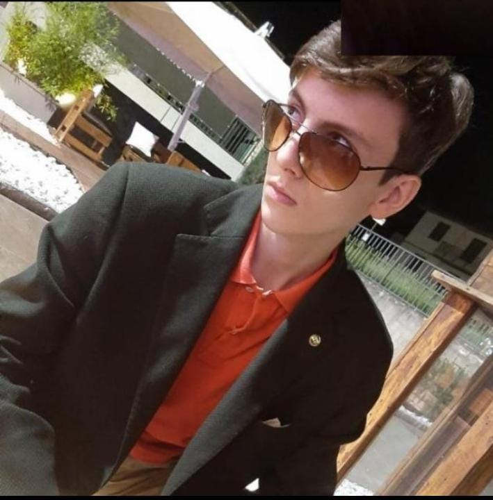

Giovanni Giuliano
-
Nazionalità: Italiano
-
Data di Nascita: 17/06/2005
-
Sesso: Maschile
-
Indirizzo E-Mail: giogio2005giui@gmail.com
-
Telefono: 38902502
Istruzione e Formazione
Scuola Superiore
Peano
-
Indirizzo:Firenze(Italia)
-
Campo di Studio: Tecnico Informatico
-
Anno Corrente:4 Anno
Diploma Scuola Secondaria di 1 grado
-
Indirizzo: Firenze
-
Voto: 7
Sport e Hobby
Sport
-
Basket per 4 Anni presso PinoDragons a Coverciano Firenze
-
Nuoto per 1 Anno presso La Costolina Firenze
Hobby
-
Videogiochi: Fifa, MotoGp, Fortnite
-
Passeggiate con Amici
-
Disegno
-
Cinematografia Commedia
Competenze linguistiche
-
Inglese livello B1
-
Spagnolo livello A2